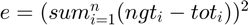

Contents
- Please, read Guide line in the descrption below
- A: Data_frame
- B: ground_truth
- LaTeX Inline Expression Example
- Assguining the arguments and split the depth for two area
- Ploting omeda for low depth and comparing to groundtruth
- Ploting omeda for high depth and comparing to groundtruth
- Ploting omeda forentire dataset depth and comparing to groundtruth
Please, read Guide line in the descrption below
Code: Valdtion of normalztion methods trhough PCA and Omaeda packges Author: Amen Adnan Khabeer; Jose Comacho; Crolina Comez Date: 19/02/2024 Email: amen.a.khabeer@uotechnology.edu.iq ;josecamacho@ugr.es;gomezll@ugr.es
Val_PCAOmeda( data_frame as (2D string) , ground_truth as ( vector)) #
1 : Both arguements are reqiured, no optional arguements in this function. # 2 : Please load your Simulation or data
Data_frame: is your normalized data ( 2D matrix with string values) ,where, row=no of
samples, clo represents no taxan, last col represent controls( healthy/unhealthy), the header is the name of bactriaGround_truth: a vector with double values, holding ground truth values
A: Data_frame
1 :Load your data (as CSV) in your workspace 2 :From the new window that open, choose output type : array string 3 :Before press import, please select all data include header
B: ground_truth
1 : Load your ground truth (as CSV) in your workspce 2 : From the open window, output type : Numric matrix 3 : Press import
LaTeX Inline Expression Example
This is an expression:

\[\text{tot1} = \frac{\sqrt{\lvert r_j \rvert} \cdot \text{sign}(r_j)}{\sum \sqrt{\lvert r_j \rvert}}\]
Assguining the arguments and split the depth for two area
% Exracuted the name of Classes ( Taxa) from simalution which is thie % frist raw with out last col (Tags) data =TSSRarephylum; data(:, 1:end-1) = data(:, 1:end-1) + 1; microbiome_data = data(:, 1:36); infection_status = data(:, 37); xx=microbiome_data; xx(isnan(xx)) = 1; xx(xx==inf)=0; % % xx = log(xx./repmat(geomean(xx,2),1,size(xx,2))); xx(isnan(xx)) = 1; xx(xx==inf)=0; xx(isnan(xx))=0; microbiome_data=xx; row_sums = sum(microbiome_data, 2) + 1; % Add eps to avoid division by zero normalized_data = microbiome_data ./ row_sums; [~, sorting_index] = sort(sum(normalized_data, 2)); sorted_transformed_data = normalized_data(sorting_index, :); sorted_infection_status = infection_status(sorting_index);
Unrecognized function or variable 'TSSRarephylum'. Error in Val_PCAOmeda (line 55) data =TSSRarephylum;
Ploting omeda for low depth and comparing to groundtruth
Find the spscies that contrubate this diffrence MATLAB code
ground_truth=genusGT; rj=omeda_pca(sorted_transformed_data,1:2,sorted_transformed_data(1:100,:), sorted_infection_status(1:100,:)); tot1= sqrt( abs(rj)).* sign(rj)/sum(sqrt( abs(rj))); gt1=(normalize(transpose(ground_truth),"norm",1)); ngt1= ( abs(gt1)).* sign(gt1)/sum(( abs(gt1))); e12=(sum(ngt1'-tot1)).^2; disp(sprintf('Total Error at low depth: %s', e12));
Ploting omeda for high depth and comparing to groundtruth
Find the spscies that contrubate this diffrence MATLAB code
ground_truth=genusGT; rj=omeda_pca(sorted_transformed_data,1:2,sorted_transformed_data(200:300,:), sorted_infection_status(200:300,:)); tot1= sqrt( abs(rj)).* sign(rj)/sum(sqrt( abs(rj))); gt1=(normalize(transpose(ground_truth),"norm",1)); ngt1= ( abs(gt1)).* sign(gt1)/sum(( abs(gt1))); e12=(sum(ngt1'-tot1)).^2; disp(sprintf('Total Error at high depth: %s', e12));
Ploting omeda forentire dataset depth and comparing to groundtruth
Find the spscies that contrubate this diffrence MATLAB code
ground_truth=genusGT; rj=omeda_pca(sorted_transformed_data,1:2,sorted_transformed_data(1:300,:), sorted_infection_status(1:300,:)); tot1= sqrt( abs(rj)).* sign(rj)/sum(sqrt( abs(rj))); gt1=(normalize(transpose(ground_truth),"norm",1)); ngt1= ( abs(gt1)).* sign(gt1)/sum(( abs(gt1))); e12=(sum(ngt1'-tot1)).^2; disp(sprintf('Total Error at entire depth: %s', e12));